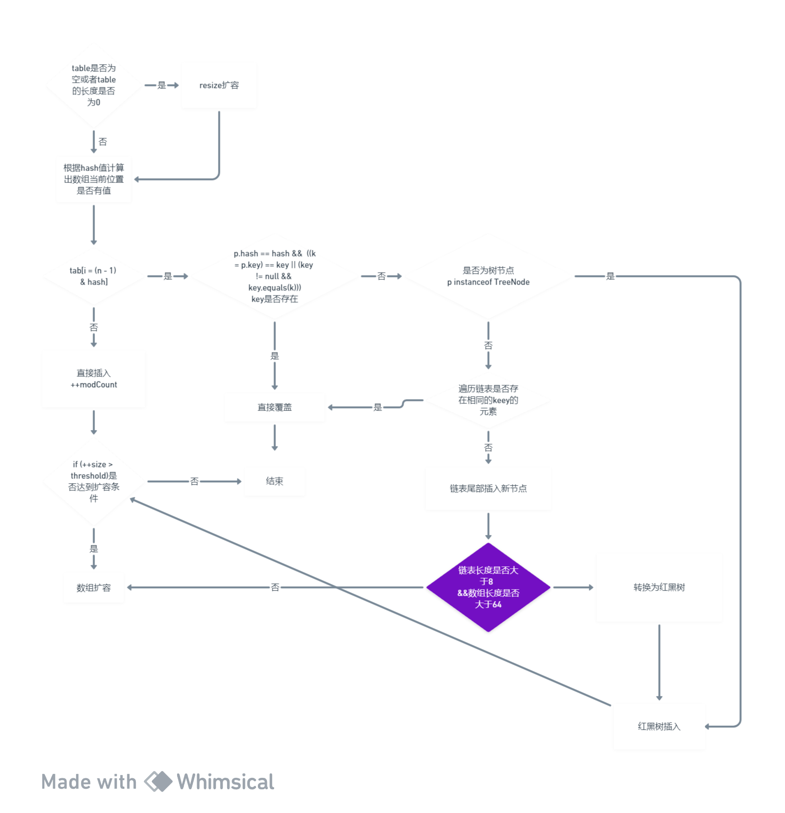

HashMap
遍历
在Java中，遍历HashMap可以通过几种不同的方式完成，每种方式适用于不同的场景和需求。以下是一些常见的遍历方法：
1. 使用entrySet()遍历键值对
这是遍历HashMap中所有键值对最常见也是最高效的方法，因为它直接访问了映射中的每个Map.Entry对象。
Map<String, Integer> map = new HashMap<>();
// 添加一些数据到map中
map.put("Apple", 1);
map.put("Banana", 2);
map.put("Cherry", 3);
for (Map.Entry<String, Integer> entry : map.entrySet()) {
System.out.println(entry.getKey() + " = " + entry.getValue());
}
2. 使用keySet()遍历所有键，然后获取每个键的值
如果你只对键感兴趣，或者需要在遍历时对每个键单独处理，可以使用这种方法。但如果需要同时访问键和值，这种方法比使用entrySet()
效率低，因为每次获取值时都需要进行一次查找。
for (String key : map.keySet()) {
Integer value = map.get(key);
System.out.println(key + " = " + value);
}
3. 使用values()遍历所有值
如果你只需要处理值，而不关心每个值对应的键是什么，可以使用这种方法。
4. 使用Java 8的forEach方法
Java 8引入了一个新的forEach方法，它可以更简洁地遍历HashMap。
这种方法使用了Lambda表达式，使代码更加简洁。forEach方法接收一个BiConsumer函数接口，这个接口对每个键值对执行给定的操作。
总结
选择哪种遍历方法取决于你的具体需求：
- 如果需要同时访问键和值，推荐使用
entrySet()。 - 如果只需要访问键或只需要访问值，可以使用
keySet()或values()。 - 如果喜欢更现代、更简洁的代码风格，可以使用Java 8的
forEach方法。
source code
数组+链表+红黑树

public class HashMap<K,V> extends AbstractMap<K,V>
implements Map<K,V>, Cloneable, Serializable {
private static final long serialVersionUID = 362498820763181265L;
/**
* The default initial capacity - MUST be a power of two.
*/
static final int DEFAULT_INITIAL_CAPACITY = 1 << 4; // aka 16
/**
* The maximum capacity, used if a higher value is implicitly specified
* by either of the constructors with arguments.
* MUST be a power of two <= 1<<30.
*/
static final int MAXIMUM_CAPACITY = 1 << 30;
/**
* The load factor used when none specified in constructor.
*/
static final float DEFAULT_LOAD_FACTOR = 0.75f;
/**
* 链表转换为树的长度
* The bin count threshold for using a tree rather than list for a
* bin. Bins are converted to trees when adding an element to a
* bin with at least this many nodes. The value must be greater
* than 2 and should be at least 8 to mesh with assumptions in
* tree removal about conversion back to plain bins upon
* shrinkage.
*/
static final int TREEIFY_THRESHOLD = 8;
/**
* The bin count threshold for untreeifying a (split) bin during a
* resize operation. Should be less than TREEIFY_THRESHOLD, and at
* most 6 to mesh with shrinkage detection under removal.
*/
static final int UNTREEIFY_THRESHOLD = 6;
/**
* 树化时 数组的长度必须大于64 避免在 HashMap
*容量较小时就进行链表到红黑树的转换。如果在容量很小的时候就进行转换，那么随着元素的增加，
* 可能很快就需要再次进行扩容（resize），这样频繁的转换和扩容会导致性能下降
*/
static final int MIN_TREEIFY_CAPACITY = 64;
哈希算法
static final int hash(Object key) {
int h;
return (key == null) ? 0 : (h = key.hashCode()) ^ (h >>> 16);
}
hashMap put()
final V putVal(int hash, K key, V value, boolean onlyIfAbsent,
boolean evict) {
Node<K,V>[] tab; Node<K,V> p; int n, i;
// 1. 检查数组是否为空，如果为空，则进行扩容 resize
if ((tab = table) == null || (n = tab.length) == 0)
n = (tab = resize()).length;
// 判断上述哈希算法计算出的位置i在数组tab中是否已经有节点存储。如果该位置为空（null），
//说明没有发生哈希碰撞，可以在这个位置上直接插入新节点
if ((p = tab[i = (n - 1) & hash]) == null)
tab[i] = newNode(hash, key, value, null);
else { //数组该位置有值·
Node<K,V> e; K k;
//即使两个不同的键可能最终被映射到同一个桶位置，它们的哈希值可能不同
//然后检查节点p中存储的键p.key是否就是待插入的键key。这里使用了==操作符，它检查两个引用是否指向内存中的同一个对象
//还需要检查key是否与k“内容相等”。这通过调用key的equals方法完成
//查找是否存在一个与待插入键相同的节点
if (p.hash == hash &&
((k = p.key) == key || (key != null && key.equals(k))))
e = p;
else if (p instanceof TreeNode)
//如果该节点是代表红黑树的节点，调用红黑树的插值方法
e = ((TreeNode<K,V>)p).putTreeVal(this, tab, hash, key, value);
else {//链表
for (int binCount = 0; ; ++binCount) {
//插入链表的最后
if ((e = p.next) == null) {
//无限循环 插入链表
p.next = newNode(hash, key, value, null);
//如果binCount>=临界值7 则将链表转换为红黑树
if (binCount >= TREEIFY_THRESHOLD - 1) // -1 for 1st
treeifyBin(tab, hash);
break;
}
//插入的值与链表中的相等
if (e.hash == hash &&
((k = e.key) == key || (key != null && key.equals(k))))
break;
//如果当前节点p的下一个节点e既不是null也不是要查找的节点，则需要继续遍历链表。
//这时，将p更新为当前的e，即将p向前移动到链表中的下一个节点，以便在下一次循环迭代中检查e的下一个节点
p = e;
}
}
//检查是否找到了一个已经存在的映射对于待插入的键
if (e != null) { // existing mapping for key
V oldValue = e.value;
//是否需要用新的值value更新节点e的值
if (!onlyIfAbsent || oldValue == null)
//如果onlyIfAbsent是false（表示不管什么情况都更新）；
//或者onlyIfAbsent是true但旧值是null（表示只有当当前没有值时才更新）
e.value = value;
afterNodeAccess(e);
return oldValue;
}
}
++modCount;
if (++size > threshold)
resize();
afterNodeInsertion(evict);
return null;
}
resize()
final Node<K,V>[] resize() {
Node<K,V>[] oldTab = table;
int oldCap = (oldTab == null) ? 0 : oldTab.length;
int oldThr = threshold;
int newCap, newThr = 0;
if (oldCap > 0) {
if (oldCap >= MAXIMUM_CAPACITY) {
threshold = Integer.MAX_VALUE;
return oldTab;
}
else if ((newCap = oldCap << 1) < MAXIMUM_CAPACITY &&
oldCap >= DEFAULT_INITIAL_CAPACITY)
newThr = oldThr << 1; // double threshold
}
else if (oldThr > 0) // initial capacity was placed in threshold
newCap = oldThr;
else { // zero initial threshold signifies using defaults
//第一次扩容
newCap = DEFAULT_INITIAL_CAPACITY;
newThr = (int)(DEFAULT_LOAD_FACTOR * DEFAULT_INITIAL_CAPACITY);
}
if (newThr == 0) {
float ft = (float)newCap * loadFactor;
newThr = (newCap < MAXIMUM_CAPACITY && ft < (float)MAXIMUM_CAPACITY ?
(int)ft : Integer.MAX_VALUE);
}
threshold = newThr;
@SuppressWarnings({"rawtypes","unchecked"})
Node<K,V>[] newTab = (Node<K,V>[])new Node[newCap];
table = newTab;
if (oldTab != null) {
for (int j = 0; j < oldCap; ++j) {
Node<K,V> e;
if ((e = oldTab[j]) != null) {
oldTab[j] = null;
if (e.next == null)
newTab[e.hash & (newCap - 1)] = e;
else if (e instanceof TreeNode)
((TreeNode<K,V>)e).split(this, newTab, j, oldCap);
else { // preserve order
Node<K,V> loHead = null, loTail = null;
Node<K,V> hiHead = null, hiTail = null;
Node<K,V> next;
do {
next = e.next;
if ((e.hash & oldCap) == 0) {
if (loTail == null)
loHead = e;
else
loTail.next = e;
loTail = e;
}
else {
if (hiTail == null)
hiHead = e;
else
hiTail.next = e;
hiTail = e;
}
} while ((e = next) != null);
if (loTail != null) {
loTail.next = null;
newTab[j] = loHead;
}
if (hiTail != null) {
hiTail.next = null;
newTab[j + oldCap] = hiHead;
}
}
}
}
}
return newTab;
}